Where they agreed
- Logging a meal, calories remaining and macros belong together.
- Goal and personal details belong together.
- Getting, filtering and adding a suggestion belong together.
Role: UI/UX & Product Designer
What should I eat with the calories I have left today?
I started dieting in 2023. I used ChatGPT to work out calories and macros, and after a while I got bored of eating the same meals. So I started asking it one thing: "I have this many calories left, what should I eat?"
That worked well in a chat. But every calorie app I knew was built around logging what I already ate. I wanted the answer to that question inside the app, on the home screen.
People who track calories can log what they ate, but nothing in the app tells them what to eat with what is left. FitCo shows what is left today, suggests food that fits, and says why.
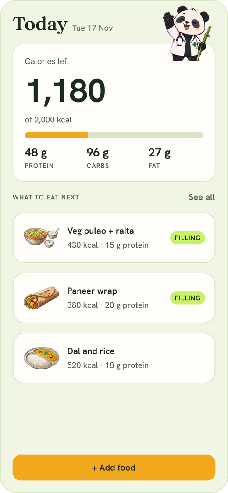
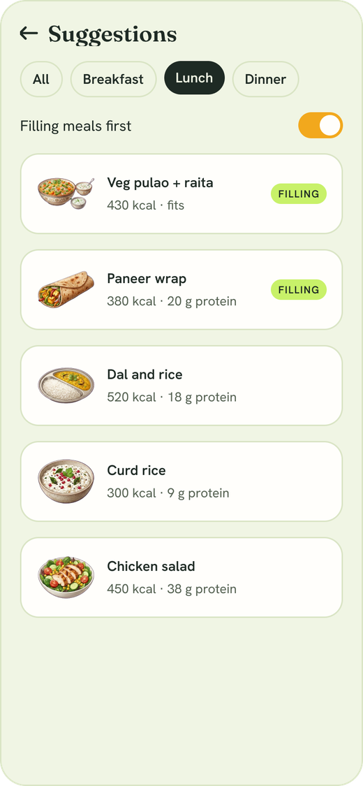
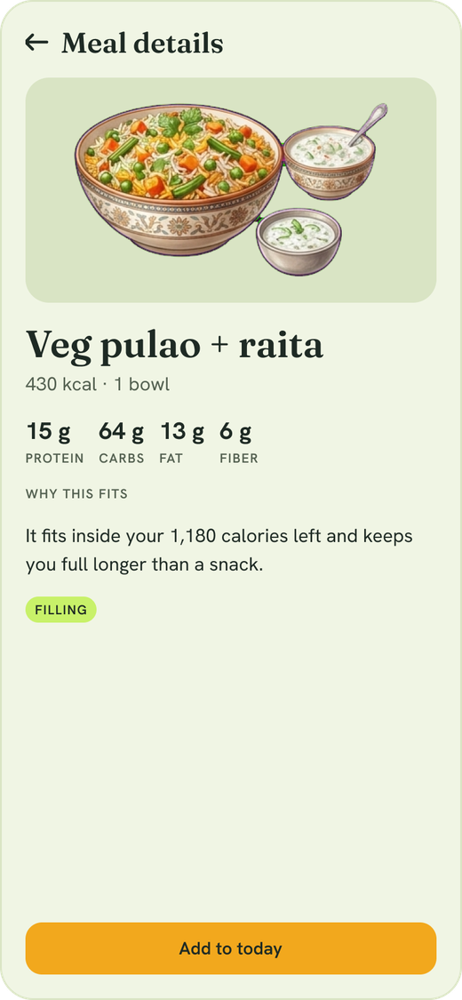
A small group, each close to the kind of person FitCo is for.
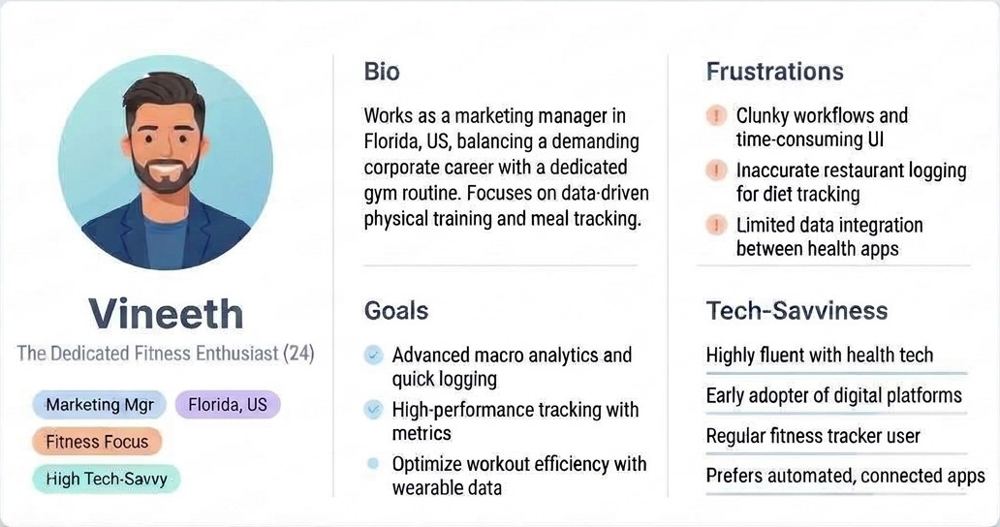
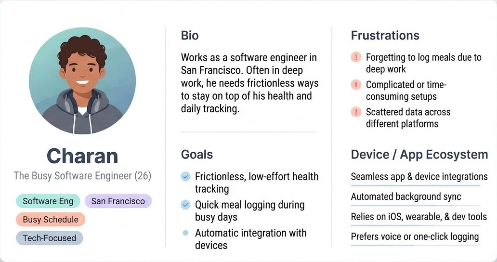
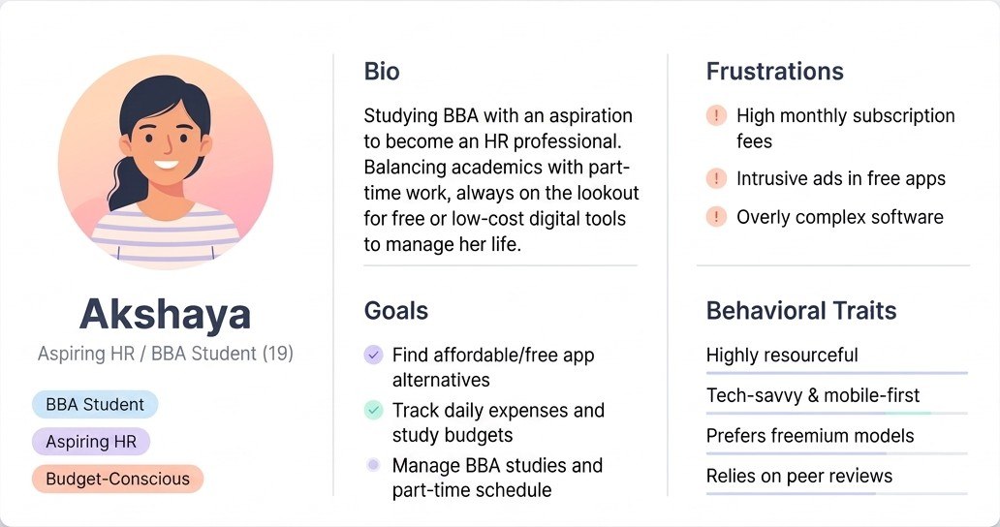
I looked at three apps people commonly use: MyFitnessPal, MacroFactor and Yazio. I compared positioning, brand, pricing (mid-2026), how each answers "what should I eat?", how logging works, and common complaints.
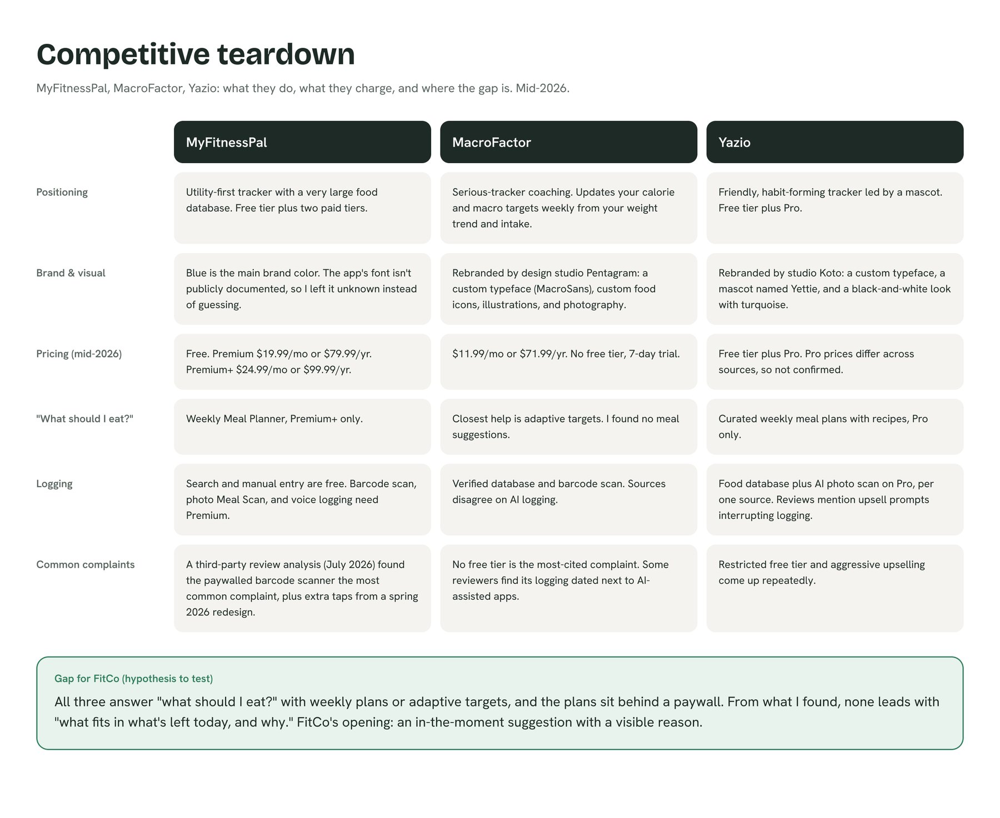
None of the three leads with what fits in what is left today, and why. That is the gap I am designing for. It is a hypothesis from reading three apps, not a proven fact.
I wrote 19 features on cards and asked Vineeth and Charan to group them in their own words, separately.
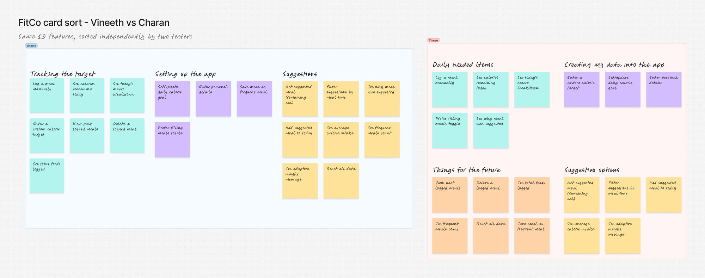
Home holds the daily trio: log, remaining, macros. Suggestions get their own place. Setup happens once. History and analytics wait for a later version.
From the card sort I drew an app map and one main flow, then added the cases where things go wrong: over your calories, filters that match nothing, nothing logged yet, no connection and a page that does not exist.
Click the image to read it up close.
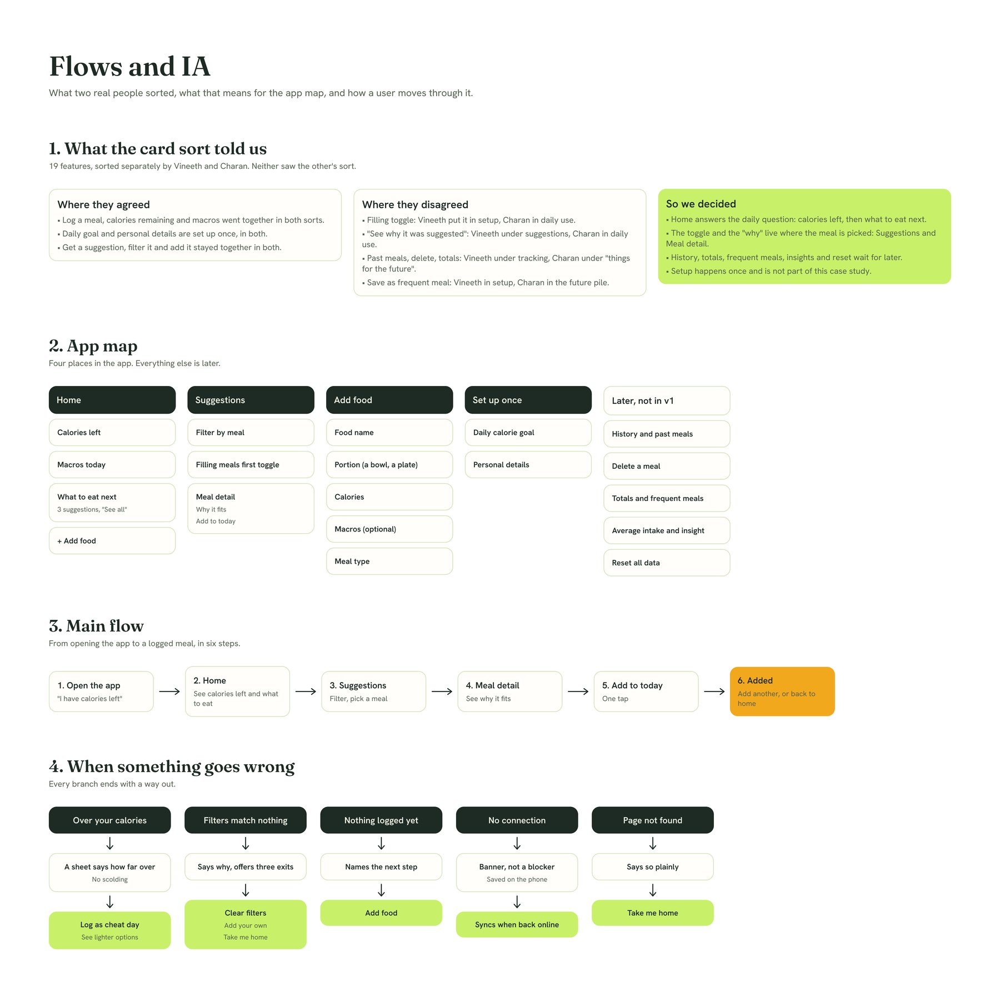
I sketch first because it is quick to change. The first version was a class assignment with ten screens, including onboarding, history and analytics. After the card sort I cut it down to what the question needs, and added screens for empty, error and over-calories states.
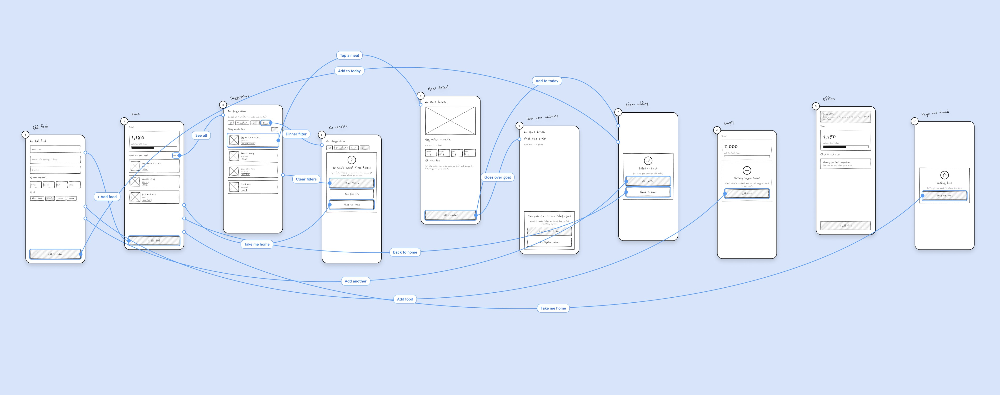
Twelve colors, each with one job. Fraunces for headings and Hanken Grotesk for numbers and text. Spacing and radius tokens, so every screen follows the same steps.
Components come with real states: buttons and chips (default, pressed, disabled), tags, progress, macro stats and a message card.
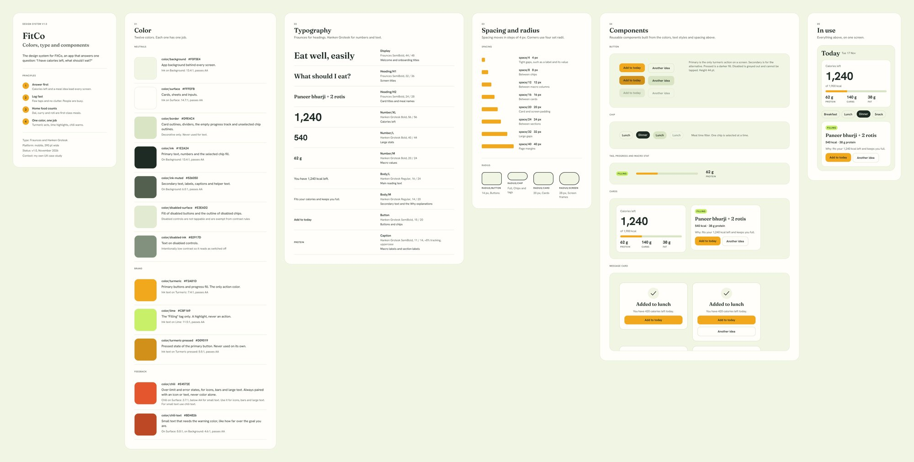
Screens built from the components and tokens above. Sample day: 1,180 kcal left of 2,000, with a veg pulao and raita suggestion at 430 kcal.
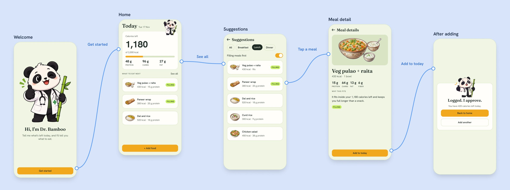
Error and empty states are where an app feels friendly or cold, so I designed them on purpose.
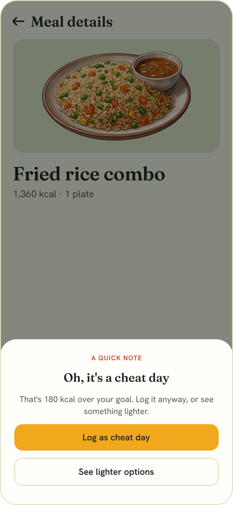
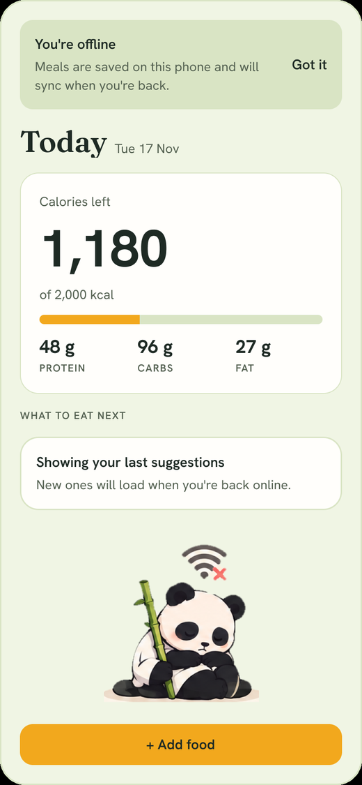
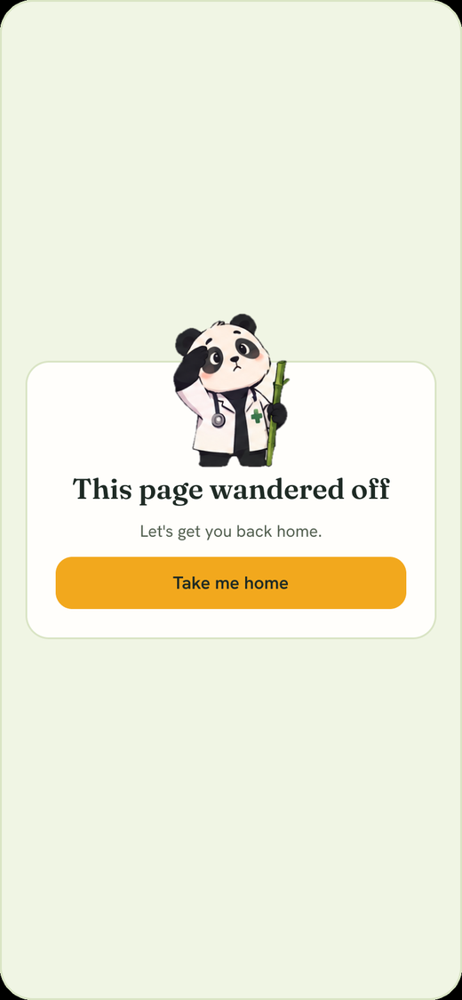
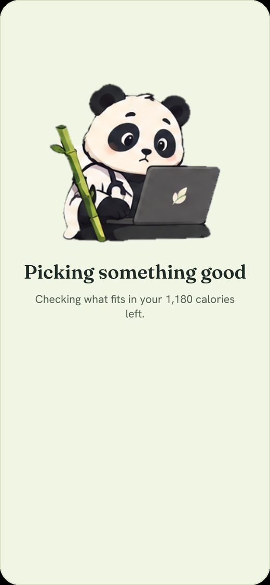
A calm panda doctor who walks with you through FitCo. He cheers when you log a meal, jokes lightly when you overshoot, never shames, and turns up when a screen is empty, lost or loading. Here he is in different moods. Drag them around.